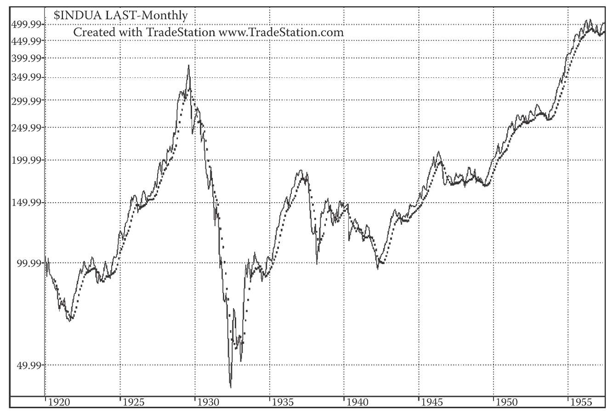
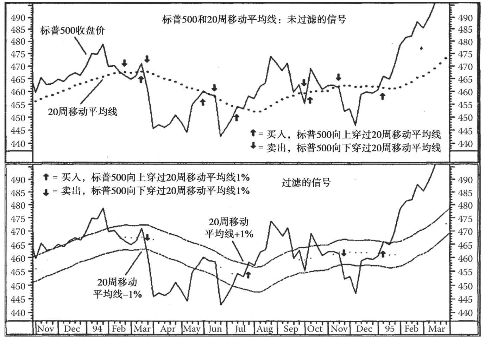

第36章 自动化的趋势线：移动平均线
在1941年，我们认为只要自己够努力、够聪明，就可以发现一个精准、必胜的公式，能够帮我们解决股市中的一切问题。我们要做的就是在拿骚、大溪地、瑞士或其他任何我们想去的地方，悠闲地享受生活，然后定期给股票经纪人发个电报，通知他们替我们下单。现在想来，我们当时真是天真无知。
自那时起，我们已经学到了不少教训（我们希望真的学到了）。我们认识到，有些事情绝对不能做；通过避免重复犯错，我们显著提高了自己的交易表现。我们还认识到，（迄今为止）市场上都不存在一个精确、必胜的公式或系统（编者按：21世纪仍然如此）。不论我们的预测方法多么有用、可靠，它们都只能代表一种可能性，常常需要修改，也常常会犯错。
趋势线就是一个有用的预测工具，也是许多投资者首先会采用的工具。无论股价是上涨、下跌还是呈横盘走势，长线趋势都展现出一种延续的倾向。当然，趋势迟早会被打破，而且趋势会被打破这一事实非常重要。但趋势一旦确立，通常趋势持续比趋势反转的概率更大。
但就像其他分析方法一样，有时我们会觉得简单趋势线“还不够好”。我们觉得应该有某种机械或数学的方法来确定趋势，这样我们就不用烦恼应该基于哪一点画出趋势线。1941年，我们非常高兴地发现（虽然其他人之前也发现过），可通过计算数天、数周或数月的平均数，得到某种自动趋势线。这条趋势线可以用来解读过去30天、200天、12个月或任何指定时间段的趋势变化。
移动平均线是个强大的工具，能够更清晰地展示一系列无规律的数值变化（比如股市波动）。此外，移动平均线还可剔除任何周期性变化（正常的季节性温度变化）的影响，便于我们观察到真正的趋势变化。
移动平均线的问题在于，它无法完全从过去的记录中脱离出来。这个问题我们很早就发现了。曲线越是光滑（周期越长），其对近期重要趋势变化的敏感性就越低。移动平均线还有一个严重缺陷，即“本末倒置”：6个月或1年前的异常高值可能不恰当地影响当前的平均数，扭曲曲线，导致一些重要的特征不能显露出来。
我们觉得，移动平均线的趋势线非常有用。但是在解释和应用它们时，需要酌情进行，并充分考虑它们的局限性。
上面我们给出了关于移动平均线的一些警告，下面我们教你一些建构它们的方法。移动平均线可以分成简单移动平均线、加权或指数移动平均线、线性移动平均线等几类。我们从多年实战中发现，简单移动平均线的用处并不输给复杂移动平均线，有时比后者更好；后者则在使用计算机时更有用。
因此，我们的讨论将集中在简单移动平均线上。最常见的是50天和200天移动平均线。如果你希望提高移动平均线的敏感性，那么你可将移动平均数的计算周期缩短至10天或20天。
要构建一条简单移动平均线（不管它是5天、10天、50天还是200天线），你可以加总5天的价格然后除以5，或加总10天的价格然后除以10，或加总50天的价格然后除以50，或加总200天的价格然后除以200。计算5天移动平均数还有一个简单方法，即减去第1天的值，然后加上第6天的值。类似的方法也适用于50天和200天移动平均数的计算。为了计算50天移动平均数，你不必每次都加总50个数值，而只需从原来的平均数中减去第1天的值，然后加上第51天的值。同样，对于200天移动平均数，你只要从原来的平均数中减去第1天的值，然后加上第201天的值。还有一个计算200天移动平均线的方法，即从300个周中挑选每周的特定一天，如周三或周四，将这些天的价格加总，然后除以30。通过这个方法，你可求得与加总200天相同的移动平均线。另一种计算方法是，不管你是在计算5天、10天、50天还是200天移动平均数，在第2天求得合计数，然后加入新一天的价格，减去最早1天的价格；每天重复这个过程，然后除以相应的天数，如5天、10天、50天、200天。
36.1 移动平均线的敏感性
时间跨度越短，则移动平均线越敏感。比方说，5天均线的敏感性比10天均线要高得多。短期移动平均线的一个问题是，你会发现很多假突破。事实上，短期移动平均线更适合大宗商品的交易。交易大宗商品，我们甚至推荐你使用30小时、3天和6天均线。
一般来说，我们推荐同时看两条移动平均线，一短一长。此外，你还可以看通道、低点移动平均线和高点移动平均线。（第10版编者按：在2000年左右的市场上，最受人关注的就是50天和200天均线。这两个指标当时几乎成了投资者的金科玉律。）
36.2 交叉和突破
一般来说，一旦价格线与两条移动平均线（第10版编者按：比如50天和200天均线）交叉，我们就认为这是一个买入或卖出信号，具体是哪种信号视交叉或突破的方向而定。
（1）升势——只要价格趋势线高于移动平均线，就保留多头仓位。
a.价格线向上突破移动平均线时，即激活买入信号。
b.如价格线突破200天均线后急跌，但并未跌穿该线，这可能是一个买入信号。我们应当密切关注当时的市况。
c.如价格线跌穿移动平均线，但均线在上倾，这可能是一个买入信号。
d.如价格线急速下跌，跌穿一根下倾的移动平均线后仍有较大跌幅，则可能会出现短线反弹，这被称为拉锯式陷阱（whipsaw trap）。
（2）跌势——只要价格趋势线低于移动平均线，就保留空头仓位。当价格触底反弹，并突破移动平均线时，我们视其为买入信号。
a.价格线高于均线，但均线在下倾，这是一个卖出信号。
b.如价格线一开始低于均线，并渐渐向均线靠拢，但在突破前就再次回落，这可能是一个卖出信号。
c.如价格线高于上倾的均线，并急速上扬，则可能会出现短线回调，这也被称为拉锯式陷阱。
d.有时，移动平均线和趋势线的突破相距很近，根据两条线的突破方向，我们可以判断是买入还是卖出信号。
（3）水平、对角和横盘走势——如果与移动平均线的长度相比，价格的震荡区域较长，那么价格线会随着均线的水平推移而上下波动。交易者必须时刻警惕，在必要时改变战术。
（4）缺口——一些移动平均线（取决于均线长度）常常在突破缺口附近被突破，尤其是缺口出现中线周期的主要阶段起始时，或调整期起始时。
区域形态中的移动平均线常常使投资者掉进陷阱。一般来说，移动平均线会在形态的中心附近震荡，不停地交替发出买入和卖出信号。区域形态中的均线会让投资者头痛不已，因为他们不知道究竟哪一次突破是出现在趋势延续或反转确认之前的那一个。
当三角形态出现时（包括下降和对称三角形），移动平均线会穿过三角形的中心。在该形态中，技术分析师能更好地判断在一系列突破中，哪一个是最重要的。当三角形到达顶点，股价向上或向下突破形态，并突破移动平均线时，这个突破就是三角形的整个形成过程中最重要的一个。股价突破移动平均线时，也往往突破趋势线。
移动平均线是从价格衍生出来的。我们可以观察均线和趋势线的配合情况，将其视为一个趋势指标。但是，移动平均线分析应与其他技术分析手段结合起来应用，以研判后市的发展。
（第10版编者按：迈吉和我都本能地厌恶机械交易法。我们希望看到对股票与时机的分析，并且思考交易的场景和各种微妙的变量。相比之下，任何机械交易法都是盲目的。移动平均线交易法仅在趋势市中有效，而在非趋势市中会使你损失惨重。我将机械交易法称为“非自然交易法”，它们在交易者和事实之间夹入了一套算法，这降低了做决策的压力，但在某些类型的市况下会导致悲剧。）
图36-1展示了一条150天移动平均线的走势。

图36-1 这张图展示了道琼斯工业平均指数的150天移动平均线（虚线）。在1929年，按150天移动平均线交易能救你一命。在20世纪80年代前（里根使美国政府的债务增长两倍的时期），根据道指的150天移动平均线进行交易（黄金交叉时买入，死亡交叉时卖出），能够取得与道氏理论同样的优势。但到了20世纪80年代，这套做法不再有效了，严格按移动平均线交易可能损失惨重。这张图中不包括道氏理论中的横盘、箱形或震荡形态时的移动平均线走势
36.3 公式研究公司的PENTAD移动平均线交易法
美国的奈德·戴维斯研究公司（Ned Davis Research，Inc.）是一家享有盛名的技术研究公司。公式研究公司（Formula Research）的尼尔逊·弗里伯格（Nelson Freeburg）对奈德·戴维斯研究公司设计的一套交易法进行了调整，形成了一套卓有成效的长线交易法。我们在此介绍它，是因为迈吉对移动平均线交易法颇感兴趣，并且有些投资者觉得数字比图表容易研读。
弗里伯格根据奈德·戴维斯研究公司的这套移动平均线交易法，采用20周移动平均线，并加入一段止损距离，就形成了自己的交易法。他宣称这套交易法卓有成效。自1980年以来，这套交易法取得了15%的平均回报率。我们都知道，当股价横盘时，移动平均线往往呈现锯齿状的走势。随着横盘的延续，移动平均线会穿过形态，而股价会围绕移动平均线震荡，构成买入和卖出信号。弗里伯格加入的这段止损距离非常有价值。请注意，我们之所以介绍此方法，是因为经验告诉我们此类方法可能有效，但我们尚未对这些研究进行验证。在不发生意外的前提下，这套方法在20世纪90年代的表现还算不错（见图36-2）。

图36-2 这张图中，我们可以看到在横盘市中运用移动平均线交易法的利与弊。当然，在1995年1月末，这套交易法可带来丰厚获利。运用移动平均线交易法，你不会错过任何一波大行情，但前提是你在股价震荡阶段之后还有可用资金。但在加入1%止损距离后，交易次数大幅减少，把握波段的准确度大幅提升。机械化交易者常常忽视定性的止损标准，也就是说，当股价与平均线交叉时，他们不注意分析总体情况。要将成交量和价格走势结合起来研判。此外，交易者可以测试不同的止损距离与止损条件